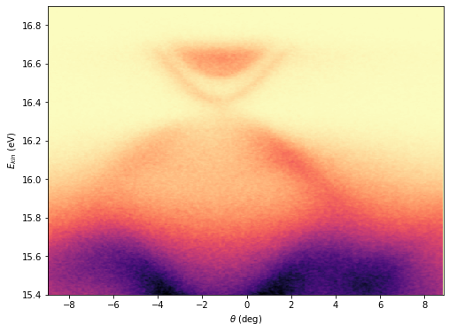
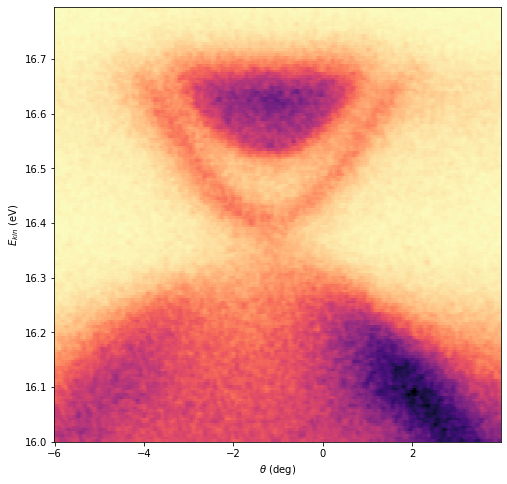

Crop Image (2-Dimensionl data)
We can crop images (two-dimensionl data) using crop_2d function.
import ARPES_Python_tools as arp
# let's import our sample data
[data, x, y] = arp.load_ses_spectra('sample_spectrum.txt')
import matplotlib.pyplot as plt
%matplotlib inline
plt.figure(figsize = (8, 6))
plt.imshow(data, origin = 'lower', aspect = 'auto', \
extent = (y[0], y[-1], x[0], x[-1]))
plt.xlabel("$\\theta$ (deg)")
plt.ylabel('$E_{kin}$ (eV)')
plt.set_cmap('magma_r')
plt.show()

Now, we want to crop and see only the Dirac cone part. We want to crop the energy range (16, 16.8) and angle range (-6, 4).
# data_crop, x_crop, y_crop = crop_2d(data, x, y, x_min, x_max, y_min, y_max)
data_crop, x_crop, y_crop = arp.crop_2d(data, x, y, 16, 16.8, -6, 4)
plt.figure(figsize = (8, 8))
plt.imshow(data_crop, origin = 'lower', aspect = 'auto', \
extent = (y_crop[0], y_crop[-1], x_crop[0], x_crop[-1]))
plt.xlabel("$\\theta$ (deg)")
plt.ylabel('$E_{kin}$ (eV)')
plt.set_cmap('magma_r')
plt.show()

This is what we wanted.